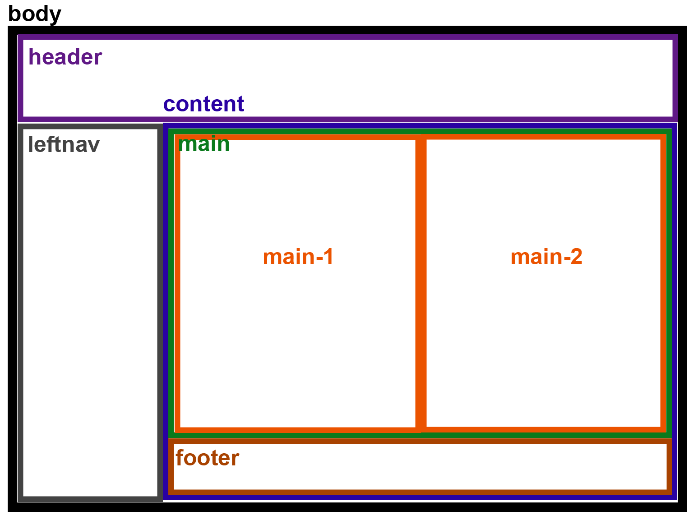

更新 : 2017/8/16
首頁版面配置

設定
- header, leftnav : position : fixed
- header高度, leftnav寬度, footer高度存成變數
- content上側跟左側設padding, 因為有設定 { box-sizing: border-box; }, 所以高度用100%
- main的高度用content高度減footer高度
- main-1, rightbar用float來做2欄並排
- leftnav的文字為了讓特效好看, 要用 { display : block; }
小收穫
- body的位置會被子層div的margin影響到
- 使用float做排版時, 需明確給寬度否則無法達到並排的效果, 還要注意寬度若是剛好占滿(例如各50%), 還會被padding, margin影響到。不過padding可用 { box-sizing: border-box; } 來解決, margin則無法
- 父層div的長/寬若只有用min-/max-這種方式給, 則子層div的長寬想用父層的比例來給時, 似乎會沒有效果
- list元素不需要包在p裡面
疑惑
- content跟main的高度一直保持固定, 就算main-1的高度拉長也一樣, 不知道這樣會不會很奇怪
- 共用主架構css可以快速讓整個網站都用相同的配置方式, 但若哪天大改架構, 仍然可能需要一個一個html檔案修改, 非常辛苦
待改善
- 響應式
- 功能表的項目似乎該由資料庫抓取, 否則每次有修改, 舊的網頁都得改, 維護起來很麻煩